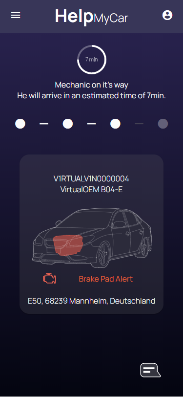
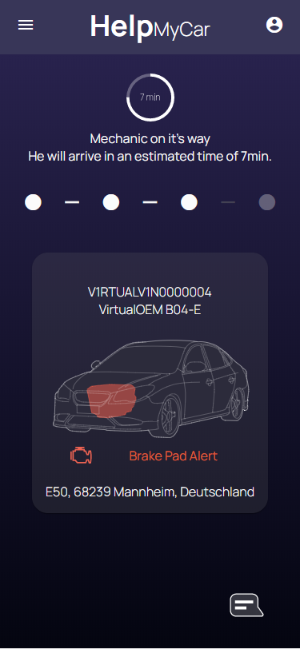

Architektur
Mit hilfe eines Browsers können die Endnutzer des HelpMyCar-Systems auf die App und das Dashboard zugreifen,
welche als
Angular Apps implementiert sind.
Die Angular Apps besorgen über HTTP die von den Nutzern angefragten Informationen vom Spring
Boot Server,
welcher über eine Caruso Dataplace API-Schnittstelle Informationen von vernetzten Fahrzeugen abfragt und dem
Frontend bereitstellt.
Die Zusatzfunktion, die Fahrzeuge auf dem Dashboard auf einer Karte zu sehen, wird mithilfe der
GoogleMaps-API
ermöglicht.
In der Architekturspezifikiation weiter lesen...